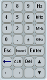
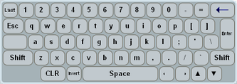
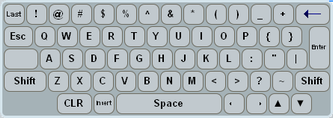

You can enable an on-screen keyboard in the setup dialog (system settings section). The keyboard is especially useful if you have a touchscreen connected. You can also use the on-screen keyboard with a mouse. This section assumes a connected touchscreen and uses the corresponding terms (for example "tap" instead of "click").
There are several variants of the keyboard. This section explains the two most important variants: An on-screen keypad for entry of numeric values and units. And an on-screen keyboard with English layout for text input.
Tap a numeric entry field to open the on-screen keypad.

Enter the numeric value as you would on a normal keypad.
Special buttons:- "±" changes the sign of the value.
- The unit buttons convert the number to another unit.
- "Insert" toggles between insert and overwrite mode.
- The bold arrow button acts as backspace.
- "CLR" deletes the entire entry. "Del" deletes the character at the cursor position.
- The arrow left/right buttons move the cursor left or right.
- The arrow up/down buttons increase/decrease the value at the cursor position.
Tap "Enter" to apply or "Esc" to discard the changes. The keypad closes in both cases.
Tap a text entry field to open the on-screen keyboard.

Enter the text as you would on a normal keyboard.
Special buttons:- "Last" discards the changes and displays the text applicable before opening the keyboard.
- "Shift" toggles between two sets of characters. The keyboard displays the currently active set.

- "CLR" deletes the entire entry.
- "Insert" toggles between insert and overwrite mode.
- The arrow up/down buttons increase/decrease the value at the cursor position.
Tap "Enter" to apply or "Esc" to discard the changes. The keyboard closes in both cases.